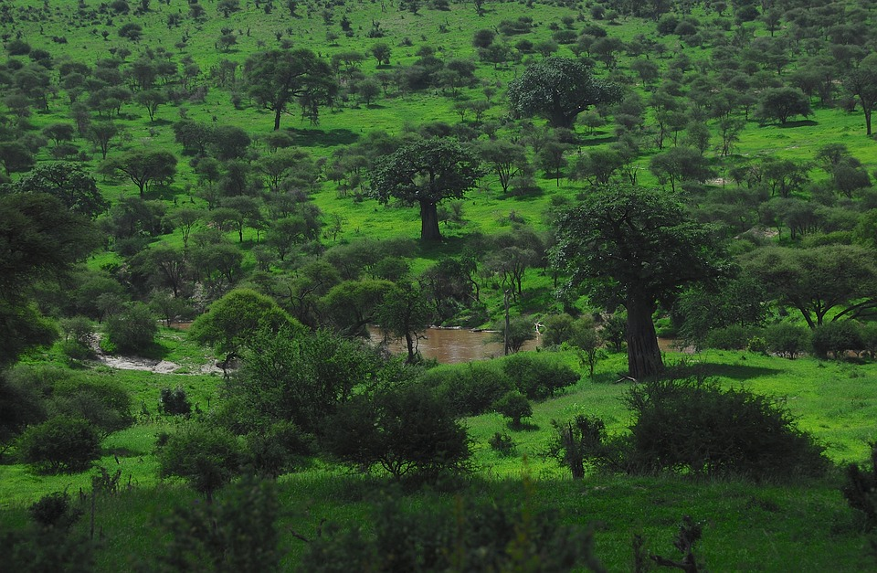

Tarangire is one of Africa’s little-known gems and a must for any northern circuit itinerary. Boasting a variety of wildlife as diverse as its landscape, Tarangire is also the park that can boast being home to Tanzania’s largest population of African elephants. With four of the Big Five also residing within the park, it is a great spot for a day trip from Arusha or as an addition to a Serengeti/Ngorongoro centred itinerary. Named after Tarangire River which flows through it, the park is an excellent choice during the dry season when animals are forced to move closer and closer to the river in search of water. Set against a backdrop of majestic baobab trees and twisted acacia, it makes for a beautiful experience.
